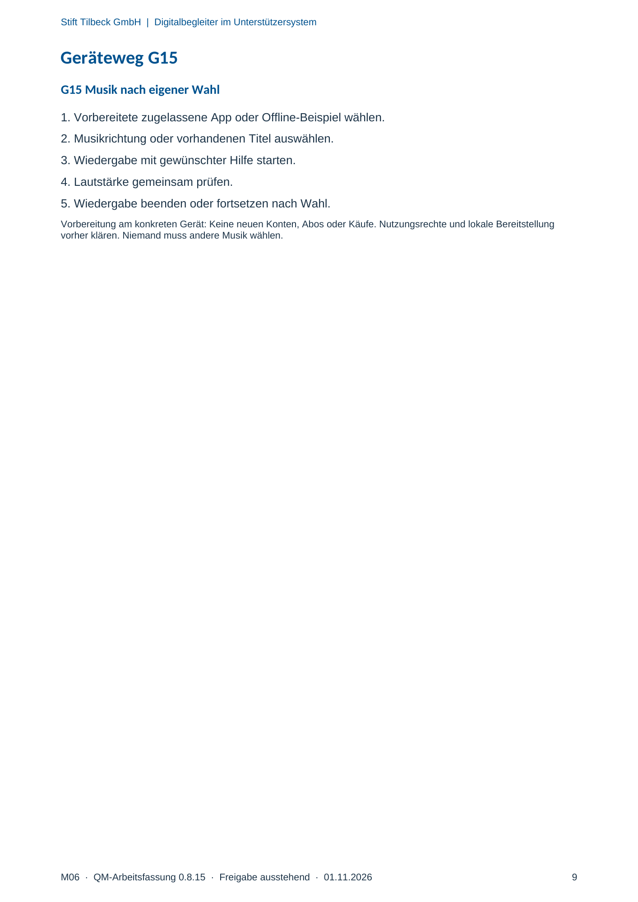

M06 · Originalseite 9
Musik nach eigener Wahl
Gezielte Original-Druckauswahl.
Fragen und Ankreuzfelder werden auf dem Ausdruck bearbeitet. Die Lesefassung speichert keine Antworten.
Lesefassung · Seite 9
Stift Tilbeck GmbH | Digitalbegleiter im Unterstützersystem
Geräteweg G15
G15 Musik nach eigener Wahl
1. Vorbereitete zugelassene App oder Offline-Beispiel wählen.
2. Musikrichtung oder vorhandenen Titel auswählen.
3. Wiedergabe mit gewünschter Hilfe starten.
4. Lautstärke gemeinsam prüfen.
5. Wiedergabe beenden oder fortsetzen nach Wahl.
Vorbereitung am konkreten Gerät: Keine neuen Konten, Abos oder Käufe. Nutzungsrechte und lokale Bereitstellung
vorher klären. Niemand muss andere Musik wählen.
Originalseite ansehen
